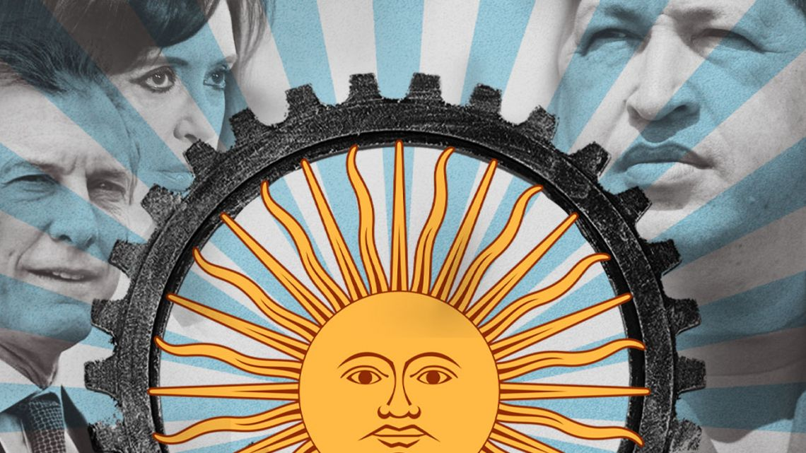

Is Argentina really on track to become the next Venezuela?
Cristina’s old agenda – the one that expired in 2015 with her last presidential mandate – appears to be back on the table
AGUSTINO FONTEVECCHIA

THE FUTURE OF ARGENTINA: CHAVISM VS NEOLIBERALISM. | JOAQUIN TEMES
I
s Argentina really on track to become the next Venezuela? The argument, which has repeated since at least Cristina Fernández de Kirchner's second term in office, has taken on renewed vigour as of late, given a string of actions by the Alberto Fernández administration that have been taken by some in the opposition as an encroachment into individual freedoms and constitutional rights. Mauricio Macri has hinted at this in recent columns and social media posts, while his handpicked president for his PRO party, Patricia Bullrich, hasn't stopped from chanting the refrain. Within the ruling Frente de Todos coalition, there hasn't been a direct response to this line of criticism, despite ample media participation by several high-ranking officials in the government, including the president and his Cabinet Chief Santiago Cafiero, who consistently attempt to rebuke the opposition with irony, satire, and a little maliciousness as well.
The suggestion that we are turning into Venezuela is part of a cultural war that has pitted Kirchnerites and anti-Peronists against each other at least since 2008, when a large section of society broke with the political model championed by Néstor Kirchner, which had expired. Up until then, the Kirchners had counted on the support of ample sectors of society who had seen Argentina recover from its 2001 implosion, effectively growing at "Chinese rates" while enjoying fiscal and commercial surpluses. Clarín, the largest and strongest media group in the country, smiled upon Néstor as he approved the fusion of Cablevisión and Multicanal, giving the company run by Héctor Magnetto essentially a monopoly, as well as the capacity to become immensely rich. That year, 2008, was also when soy prices peaked, as the global financial crisis that began with the collapse of Lehman Brothers (it was actually Bear Sterns that started it all) began to send shockwaves throughout the global economy.
Curiously enough, with Cristina by then in the Casa Rosada and with an economic model that had run out of steam, a confrontation with the agricultural sector over export taxes led to an all-out war between the Kirchnerites and their enemies. Cristina's confrontational style played well to her narrative pitting "us" against "them," which allowed a critical mass of "Cristina-haters" to eventually vote her out of office, bringing in Macri to replace them.
The Kirchners' close relationship with Venezuelan leader Hugo Chávez was part of the broader ‘pink tide’ of populist leftists who took power throughout Latin America, which also coincided with US decadence on the back of failed wars in Iraq and Afghanistan, with the White House occupied by an unpopular and uncharismatic leader (George W. Bush). It all added to the myth, along with the suitcases filled with petrodollars with which Comandante Chávez financed Mrs. Fernández de Kirchner's second presidential campaign. A firm and authoritative control of both houses of Congress, along with the complete alignment of the Judiciary, and the media crusade against Clarín marked the "vamos por todo" ("we want it all") ethos of the later Cristina years.
That time was also marked by intensifying economic decadence. While CFK initially tried to correct macroeconomic imbalances through "fine-tuning", she quickly turned toward Axel Kicillof's statist policies which sought to manage the scarce dollars left in the economy after the bonanza of the commodities super-cycle. Capital controls, tax hounds, rising inflation and other restrictions marked the beginning of the end, as did the war with New York judge Thomas Griesa and hedge fund billionaire Paul Singer over Argentina's sovereign debt.
Cristina left behind the deep scars of “la grieta", which fuelled the hatred of both sides against each other. Those who feel we are headed toward Venezuela again, Macri’s die-hard fans, express feelings of hatred and even violent aggression toward Kirchnerites. The Kirchnerites, led by none other than Cristina, feel the same hatred towards the middle and upper-class anti-Peronists they waged their cultural war against.
Alberto Fernández owes his presidency to Cristina, who hand picked him to lead the ticket, while imposing herself as vice-president. Alberto wove an alliance that included sectors with deep seated suspicions of each other, bringing together Sergio Massa's Frente Renovador, a league of Peronists governors, and Kirchnerites. They preached unity and consensus, and thanks to the coronavirus pandemic, they have been able to work closely and collaboratively with a major political opponent, City Mayor Horacio Rodríguez Larreta. The question from day one was whether Alberto was a puppet, the same question asked of Cristina after Néstor decided not to run for re-election and passed the baton onto her.
Is it possible to run a tripartite coalition government ,without succumbing to the wishes of its most powerful sector (in this case Kirchnerism), if those inclinations are contrary to the other two? Another question would be: is it true that Alberto and the other sectors of the coalition don't share Cristina's agenda? The botched appropriation of agri-business giant Vicentín, the judicial reform bill (and CFK's consistent intrusion into the affairs of the Judiciary to cover her own back by means of Twitter), the increased aggressiveness of the official public discourse, the public break-up of Alberto and Horacio, the "wealth tax," and now, the hardening of currency controls, have pushed a substantial swathe of the public opinion to believe Cristina is now calling the shots. Her old agenda – the one that expired in 2015 with her last presidential mandate – appears to be back on the table.
According to Economy Minister Martín Guzmán, Argentina could bounce back to 5.5 percent GDP growth next year, while bringing inflation back below 30 percent as he cuts the deficit. These are some of the basic parameters of the budget sent forth this week. The official peso-dollar exchange rate will hover just above 100 pesos per greenback. Beyond the vicissitudes of the pandemic, and whether or not we have a vaccine by early next year, it is only possible to imagine a recovering nation with this level of polarisation. And we have midterm elections next year.
I personally do not believe the conditions are in place for Argentina to descend into a Venezuelan state of chaos, as I feel society, and our institutions, will not permit it. But it is by no means impossible. Let's hope Guzmán is right